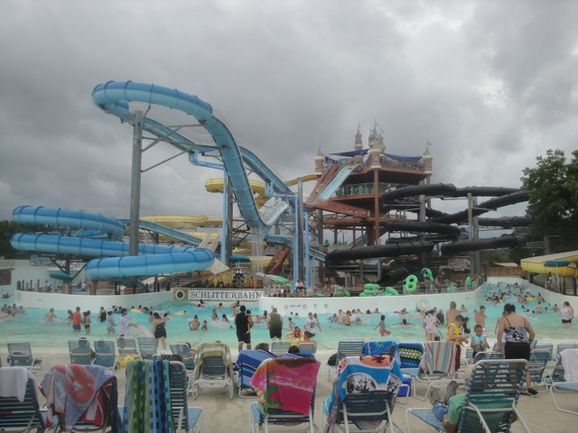
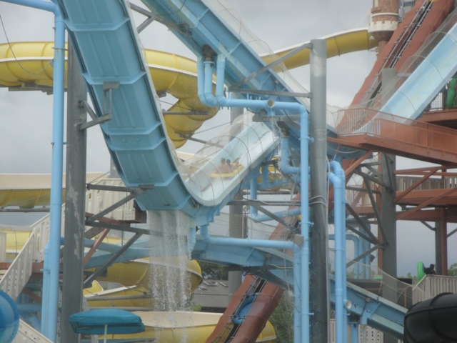
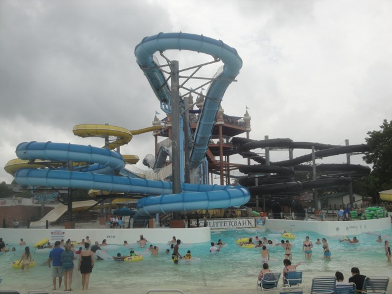

| |
Master Blaster Review

We're here at Schlitterbahn, and we're here to ride one of their famous uphill water coasters, Master Blaster. It may not have been the first water coaster (that's Dragon's Revenge), but this is the one that made them popular. Hell, they're called Master Blasters because of this slide. Now, it's far from the best one, but it is a fun slide, and did lead the way to more fun water coasters, like Wildebeest. So yeah. This is certainly a famous water slide. We climb up all the stairs, get in the tube (you don't have to carry it up), and then head down the first drop, which I will admit is A LOT of fun. We then head up a hill, lose some of our speed, go through a tiny little bump, head up, and go around an enclosed turn. Yeah, we're having a lot of fun right now. We then head down another big drop, gaining a lot of speed. WEE!!! We rise up a big hill, and get a nice big splash in the face. That's a lot of fun. We head down a small drop, dip back up, and go around an enclosed turn. Fun. Yeah, we break out into the daylight, go down another fun little drop, before going through another enclosed turn, where we actually get some laterals. Wee. And now we have a double down. And there's actually a little airtime here. WEE!!! Though it's nothing crazy, it's still a little fun. We rise up another hill, go through another tiny little dip, and BOOM!!! Into the dark again for a downward helix. The helix is fun, but not that fast. And yeah, we come out of that and into the pool. Aww. I was hoping for another drop. Well, like I said, it may not be the best of it's kind, but it inspired MANY other water coasters to be built. I'd definetly give it a ride sometime if you're at Schlitterbahn. It is famous, and though I certainly will call it overrated, I will acknowledge that it is indeed, a very fun ride.
7/10
Location: Schlitterbahn (New Braunfels)
Opened: 1996
Built by: Schlitterbahn
Last Ridden: July 15, 2013
Master Blaster Photos


Home
|